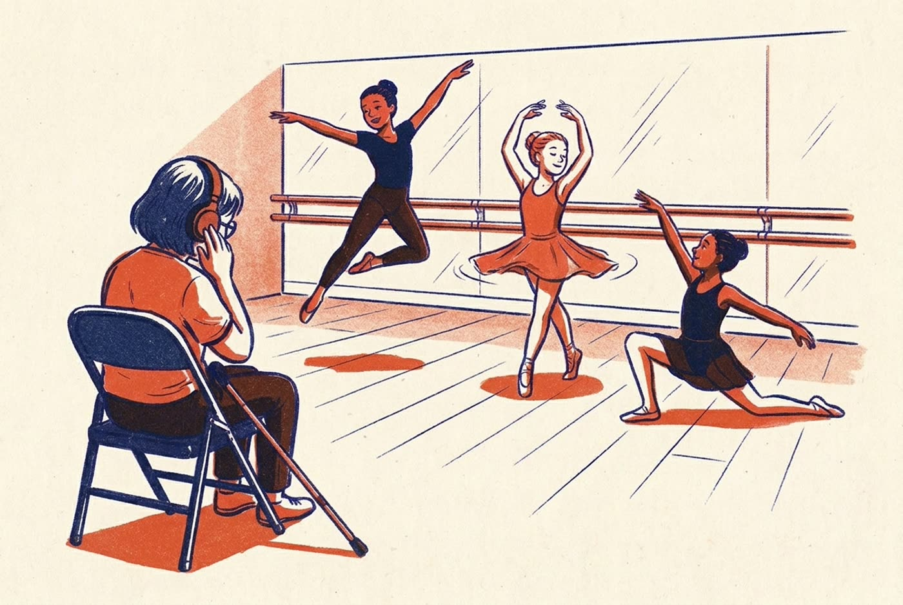

For small studios and their audiences
Experience the dance, not just the music.
Recitals, school shows and competitions almost never get professional audio description. Unseen Steps gives a studio rich description of its own show, so blind and partially sighted people in the audience hear what the dancers are doing, in the style's own words, in the gaps in the music.

Where the words go
The music stays the main thing. Each line lands in a gap, just after the movement it describes. Choose a segment to read its line.
Aquamarine, 63 seconds: where the words go
- Music
- Narration
- Atmospheric Intro
- Beat Drop & Standing Whip Phrase
- Floorwork & Splits Sequence
- Standing Tutting & Groove Section
- Final Floor Drop & Leg Extension
What a listener hears
Lines Gemini wrote for real choreography, in each style's own vocabulary.
-
Hand on hip, high right développé en pointe taps the extended tambourine.
-
Hair whip to profile, dropping into unison duckwalk toe-squat bounces.
-
Holds a fierce splayed-hand pose, then erupts into explosive llamada stamps!
-
Spin from aramandi into a tiered tableau, front in muzhumandi, sharp mudras.
-
Tiny spinning bourrées on the balls of her feet, wrists soft!
Described in advance from each recording, the same way a studio's show notes come from its rehearsal video. Not narrated live. All choreography belongs to its creators.
Hear it on a ballet solo
A 23-second ballet solo with Unseen Steps' narration. Music and narration have their own volume controls, and the narration is also shown as large captions and as a transcript below.
Off by default, because the narration is already spoken aloud.
Keyboard: Space plays or pauses when the player has focus; the arrow keys on the position slider move 5 seconds.
Transcript
From rehearsal to the night
Before the show
The studio uploads its rehearsal
A video of the piece with its song.
Gemini 4 Argon studies it
The style and its influences, what makes the choreography distinctive, every change of texture and the key moments.
Show notes, checked
Written in the style's own terms and explained for newcomers. Every line is checked against the video, stored per show in MongoDB Atlas, and the studio can adjust them.
During the show
A camera follows the dancer
Pose tracking measures jumps, turns, facing, footwork and floor work.
Gemini Live narrates in the gaps
It holds the show notes, knows where it is in the song, and describes what the dancer does now, including anything different from rehearsal, in under a second.
Each listener hears it on their own phone
Every claim is checked against the measured pose, and the narration never plays over the room's music.
What the system saw and said
The same performance with the tracked skeleton drawn on. The counter follows the music; the list shows each line as it's spoken, with the drafts the checker rejected and why.
Built to be trusted
Checked, not guessed
Every line in the show notes is checked against the video at its moment. Live, words like jump, turn, left, kick, floor or still must match the measured movement.
The style's own terms, explained
A term is used only when every part of it is visible (a plié needs turned-out knees), and it's explained the first time so a newcomer can picture it. The vocabulary, vetted by dancers, lives in MongoDB Atlas.
Private by design
Video frames are never stored, only body points. Narration goes to the listener's own earphones, never over the room's music.
Studios stay in charge
It covers the shows that would otherwise get no description. The studio, or a describer working with it, can correct the show notes, the style and the glossary.